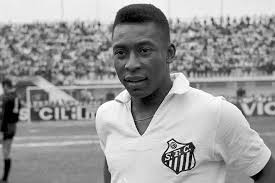
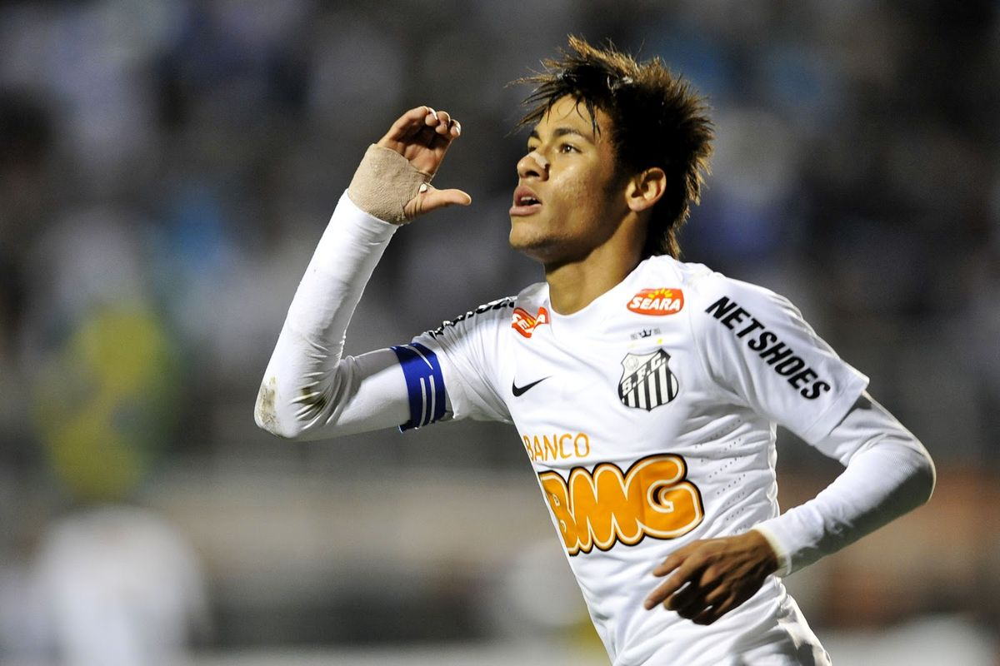
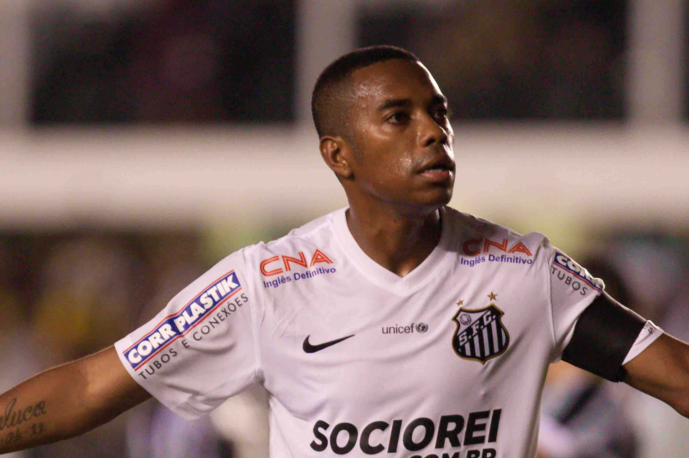
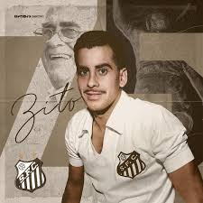

Santos Futebol Clube: Um dos times mais icônicos e respeitados do Brasil, com uma rica história e tradição no futebol nacional e internacional. Com uma torcida apaixonada e dedicada, o Santos é conhecido por sua habilidade em revelar talentos e produzir jogadores de alto nível. O Santos tem uma longa história de sucesso, incluindo várias conquistas em campeonatos estaduais e nacionais, além de títulos internacionais importantes. O time é conhecido por sua filosofia de jogo baseada na habilidade técnica e na criatividade, o que o torna um prazer de assistir para os fãs de futebol. Seja nos gramados do Vila Belmiro, seu estádio histórico, ou em partidas pelo país, o Santos sempre representa uma força a ser considerada no futebol brasileiro. Com sua paixão, talento e dedicação, o Santos continua a inspirar gerações de jogadores e fãs, mantendo viva a chama do futebol brasileiro.
Grandes jogadores que são considerados ídolos do Santos FC
  
Pelé: considerado um dos maiores jogadores de todos os tempos, conquistando dois mundiais consecutivos.
Neymar: conquistou a Libertadores de 2011 e inúmeros títulos com o clube.
Robinho: encantou o mundo com seus dribles e velocidade, sendo fundamental nas conquistas dos Brasileiros de 2002 e 2004.
Zito: Grande líder do Santos nos anos 1960, Zito capitaneou o time nas maiores conquistas do clube, incluindo a Libertadores e o Mundial.